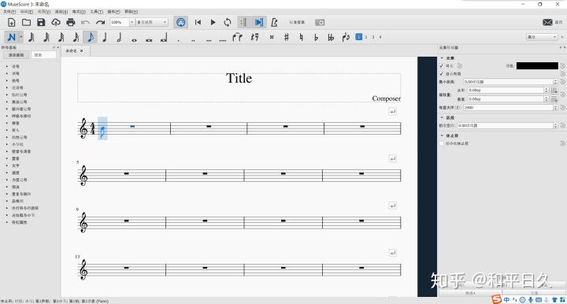

乐理菜鸡怎么给自己的小说写BGM?¶
因为对自己小说里的人物很有感觉，就想着能不能做点歌曲。
不吹不黑，我的乐理基础也就是个小学生。
小时候我妈喊我去学琴，说是培养下气质。
我想电视里郎朗有点骚包，上课放到这个人女生都要叫，我心说这大概就是气质，想着暗恋的女孩，觉得不如试试？
然后有那么几年，放学后都练琴，我妈说孩儿辛苦了，我其实也没什么回忆，就记得几个帅哥哥漂亮姐姐陪我猜拳玩游戏，我总赢。
结果六年级的一个中午，在琴行陪小姐姐们啃苹果，眼神有点飘，也没看到里面的马蜂。进了医院，琴也别学了。刚好知道，我暗恋那女孩和我互为暗恋5年。有些事情你还是搞错了关键。
所以说我也没学个几年音乐，半吊子都算不上。但是想整。
过了十多年，就写了个小说。你看着里面角色，都是你儿女，看得又哭又笑，这个对话默契好，那个对话很沙雕。你哪儿有什么办法，奔着打动人心去，肯定先把自己打到懵逼。
懵逼到开始写歌，给人物写歌。确实不会啊，但就是想写。
当然我也不是一无是处，平时也能哼几个调子，拿手机录音记下来。
可是记个哼哼算个毛？
这时候就遗憾当时学艺不精，而且怎么一只马蜂就坏了自己的音乐路？当时也是年少轻狂，居然想着女孩子去学钢琴，谁想后来我才是真的女孩子。
所以得想个办法。
得整套工作流。
先说，我只会哼哼。
怎么把哼哼变成格式化的各种音乐文件？首先要找调嘛。
找调¶
怎么找调嘛？谷歌百度，“python audio to music notes”, “audio to music notes”, …
淦，nothing，都是nothing。
所以说人生还是有时候要机缘巧合，正好去手机商店里找到了一个app，可以把单声道人声转音符，叫pitch。
其实我一看这个名字就一声冷笑。谁还没写过暗线伏笔呢，老天你这是说我想屁吃呢？世界online写得真搓，梗都是臭的。我倒要看看，是我对自己书中故事人物的感情更深，还是你玩的这个破梗更妙。
emacs启动，手机打开app放到床头。啊，依，乌，诶，哦。
对不起串场了。
总之，最后，哼哼变成了音符构成的线性序列。
自此，我回到了小学五年级的找调水平。
打谱¶
有调了，我歌呢？
先想有没有编程语言。
不是很懂音乐编程，微信，启动，前导师，中国活着的摇滚传奇，据说会几百种乐器。
牛逼，真的宝藏男孩。唉，人和人差距怎么就这么大。
前导师发了几个链接，让我试下，alda编程语言.
好用，我可以！
cat redy-girl.alda
piano: o3
g8 a b > c d e f+ g | a b > c d e f+ g4
g8 f+ e d c < b a g | f+ e d c < b a g4
<< g1/>g/>g/b/>d/g
alda play --file redy-girl.alda
# 你听到了歌声
写了几句，我发现了华点。
我咋出歌呢？
一查可以出midi。
啥是midi, midi是啥？
我不知道。我只知道，我是菜。可还是想解决问题。
好啦好啦，人家记住了啦。会学的，下次一定。
但是先闪。
我会啥？啥简单，五线谱啊。
五线谱, 好的。
谷歌，再次启动，“乐谱制作软件”！
点进去，还可以，能懂！

那开肝吧。
是可以用了，但总之还是有点问题。
但是可以用了。
用, 用出来了: https://github.com/thautwarm/arlas-and-cure 。
虽然谱面被我的某位老婆喷傻逼了。